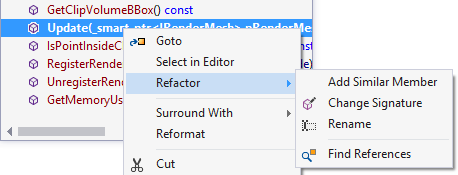
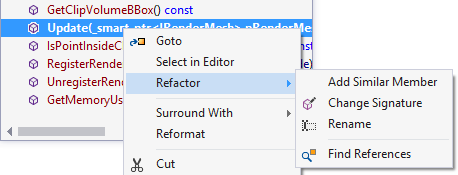

VA Outline
Open the context menu in the VA Outline to apply commands—refactoring, surrounding with VA Snippets, and reformatting—to objects within the active document.

Learn more.
Open the context menu in the VA Outline to apply commands—refactoring, surrounding with VA Snippets, and reformatting—to objects within the active document.

Learn more.